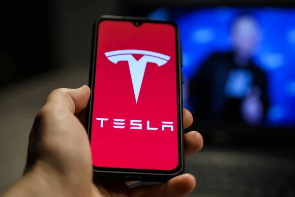
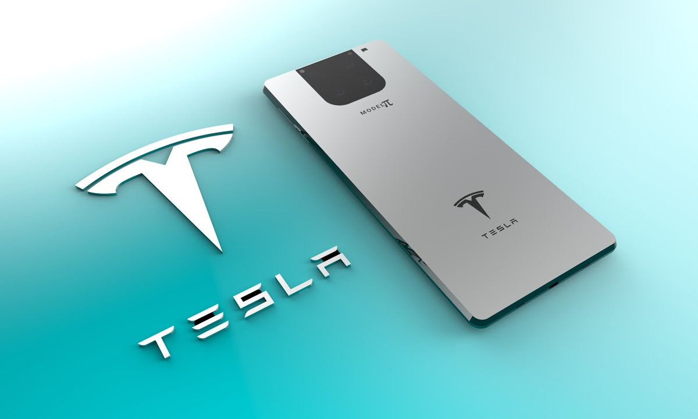

Foto tirada: Pinterest Site: https://br.pinterest.com/pin/327777679113587020/
Anunciado o novo Smartphone Tesla? Fãs torcem por projeto de Elon Musk
Por ora existem mais rumores do que fatos sobre o suposto celular para rivalizar com Apple, Samsung e Xiaomi. Pode ser que o smartphone tire proveito dos satélites da Starlink
Por Pablo Henrique, para SenaiBak 18/07/2022
Foto tirada: Pinterest
Site: https://br.pinterest.com/pin/327777679113587020/
Depois de revolucionar os carros elétricos e iniciar uma jornada fantástica de exploração espacial agora parece que o empresário Elon Musk também quer se meter na fabricação de celulares. Faz algum tempo que se fala num tal de smartphone da Tesla. Diversos rumores pairam no ar sobre um dispositivo que estaria em linha com os princípios da companhia automobilística. Como deve ser este aparelho? Você confere a seguir. Apesar da Tesla ainda não ter confirmado o projeto de um novo smartphone, não seria de grande surpresa o anúncio de um celular. Isso porque a companhia carrega o histórico de lançar produtos diferentes do seu portfólio padrão. Como exemplo temos guarda-chuva, apito de aço inoxidável e até mesmo quadriciclo elétrico para crianças.

Foto tirada: Deposiphotos
Site: https://br.depositphotos.com/540040308/stock-photo-tesla-model-smartphone-phone-made.html
Design do smartphone da Tesla
É pouco provável que a Tesla crie um sistema próprio para competir com o iOS (Apple)
e o Android (Google), que dominam o mercado. A empresa de Elon Musk poderia usar
o Android numa versão personalizada.
Quando o smartphone seria lançado?
O iPhone 14, que deve ser lançado apenas em setembro deste ano, por exemplo, já teve uma série
de informações vazadas – mesmo com a Apple trabalhando em absoluto segredo. Os vazamentos
são comuns e nem mesmo a Tesla estaria livre disso.

Foto tirada: Gizmodo Brasil
Site: https://gizmodo.uol.com.br/smartphone-da-tesla-comeca-especulacao-sobre-data-de-lancamento-do-model-pi/
Qual seria o preço do smartphone da Tesla?
As funções esperadas para o celular da empresa de Elon Musk são bem atraentes. Se o modelo
realmente existir, os interessados provavelmente terão de pagar um preço elevado, compatível
com o valor dos principais topos de linha do mercado.
Desta forma, os chutes iniciais para o preço do smartphone da Tesla, supondo que ele venha de
fato ao mercado, começam em US$ 800 e vão até U$ 1.200, o que dá entre R$ 4.090 a R$ 6.130 em
conversão direta.
Com informações de LifeWare, Tag6 e The Khaama Press.